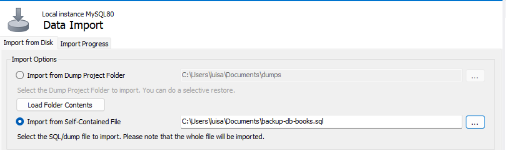
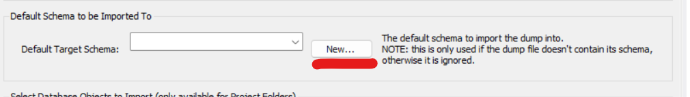
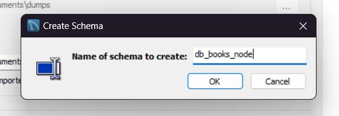

Restauración de la Base de datos
En la pestaña de importación, selecciona "Import from Self-Contained File" y busca el archivo "backup-db-books.sql" en tu directorio.
IMPORTANTE Asegúrate de crear una nueva base de datos haciendo clic en el botón "New".
El nombre de la base de datos a crear es "db_books_node"
Ahora ya puedes darle al boton "Import data" ✓
Configuración de la conexión a la BD
En la raiz del proyecto se encuentra el archivo ".env", aqui es donde se configurará la conexión a MySql
- DB_HOST = localhost
- DB_PORT = 3306
- DB_NAME = db_books_node
- DB_USER = root
- DB_PASS = (Ingresar tu contraseña)
Levantar el proyecto
Usar el comando "npm run dev"